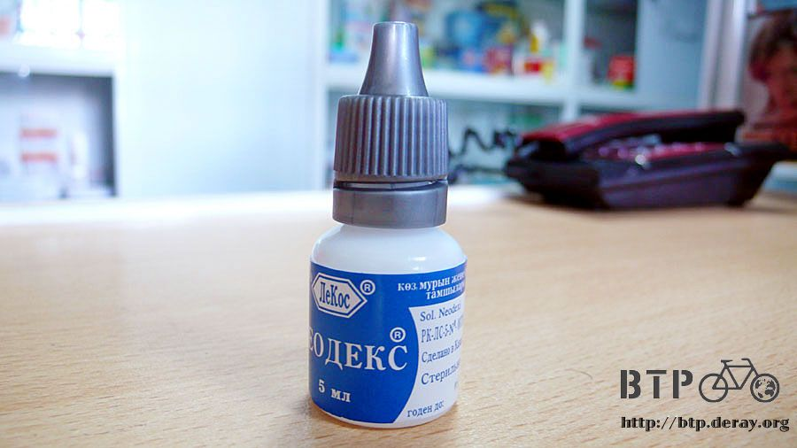
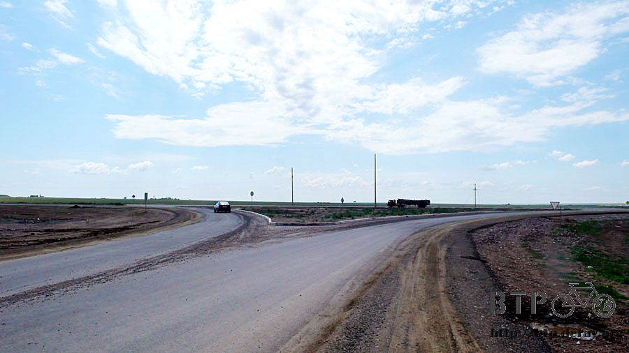

好黏的土
鬧鐘響的第一聲，清晨五點半，準時起床沒有拖延，走到大門口，閉上眼睛先誠懇的祈禱，拜託開門看到的是好天氣！
將門輕輕推開，雨已經停了，終於～在下了一整晝夜之後，停了！
天空中雖然有雲，但都不是烏雲，也不像會下雨的樣子，可以說是晴空萬里的天氣。
老天爺聽到昨天我睡前的願望，今天真的賞給我一個晴天，從今而後我再也不會嫌太陽大、天氣熱了。
雖然我動作輕悄悄的，但還是將維格特給吵醒，他醒來的第一件事情也是關心雨停了沒？
看到外頭的好天氣，連他都替我高興起來，然後用電爐燒開水泡了一大桶的紅茶，兩個人就喝著熱茶配餅乾當早餐。
我一邊喝茶一邊整備行李，在室內風乾一夜之後，包包內的東西終於將濕氣都散去，可以安心的打包回去。
臨走前拍了一張維格特的照片，哈薩克大家都是握手表示友誼，我將維格特抱了一個滿懷，感謝他在陰雨的天氣收留我一晚上。
趁著好天氣上路，雖然天氣轉晴，但是下一整天的雨之後，泥巴路變的鬆軟又泥濘，根本不可能騎車通過，只好用牽的走回馬路。
即使是用牽的走，泥巴也是不停的黏上來，腳底、輪胎通通免不了，附著的泥巴越來越厚，舉步維艱、車子也快要牽不動。
好不容易走回柏油路，整個輪胎全部都是爛泥巴加上小石頭，滿到跟擋泥板之間沒有任何的縫隙。
路上正好有一塊長方形的積水區，反覆騎著小多在這邊繞行，清洗輪胎上的泥巴，繞了十幾次，終於乾淨了一點點。
今天不只是好天氣而已，連風向都站在我這邊，完全是大順風，並且配合我騎的路線，跟著改變風吹的方向。
看著路旁搖擺的小草隨風擺動的方向和自己是同一邊，真是超開心的，順著風騎車很輕鬆，踏板踩起來好舒適，一點也不費力。
除了好天氣和順風之外，今天還有第三個禮物，路況變得極好。
可以說是除了市區之外最優良的道路，平整無坑洞，柏油鋪的也很有水準，騎在上面真是一種享受。
今天一口氣揮別了前幾天的爛路、逆風和下雨的鳥天氣，所有的劣勢都變成優勢，是在哈薩克旅行以來騎車最輕鬆的一天。
一路御風而行，維格特給的情報是往下走五十公里就會有城市，可以讓我補給兼吃喝。
這個城市在出發之後的三個小時抵達，這裡其實本來是昨天的目的地，但是因為下雨的關係所以沒騎到。
在城市的入口就可以看到指示牌。這邊有的吃有的住，還可以打電話。
騎到城市固然開心，但是有一個小問題，騎了大半個月的主要道路在這裡就不見了。
取而代之的是一條從零開始標示里程的新路，而且告示牌指示的也並非我要去的科斯塔奈。
難道剛才在某個需要轉彎的地方我忽略了嗎？
帶著疑問先進去城裡補給一下再說，找到一間雜貨店，準備要進去採買之前正好來了一輛廂型車，應該稱之為麵包車比較適合。
在雜貨店採買了飲料和蛋糕，面對未知的道路，食物永遠不嫌多，琳瑯滿目的商品就挑喜歡的買。
雜貨店都會有一個很大的秤，是拿來秤餅乾跟糖果用的，這些零賣的食物價錢都很便宜。
雜貨店的隔壁是畫著紅色十字的藥局，再次詢問眼藥水的事，這邊有賣，可是看起來不像是眼藥水。
瓶子有點太藥用的感覺，我需要的是滋潤用的，確認了好幾次這個真的能滴在眼睛上嗎？
店員很肯定的說沒問題，可是我又不能叫他親自示範滴給我看。

鎮上一樣養了很多的鵝，通通看著同一個方向，那邊有什麼精彩的嗎？
連續幾天看到這麼多鵝，突然很想吃鵝肉，不知道哪邊有在賣呢....流口水
採買完畢之後，到加油站問路，阿伯跟我說走那條新路是可以到科斯塔奈沒有問題的。
既然條條大路通科斯塔奈，那我就不費心去找不見的那條路到底跑去哪邊。
騎在新路上，路況依然良好，並不比大馬路遜色，加上風勢的助長，一路上很有飆車的快感。
中午時分肚子餓，餐廳適時的出現在眼前，要填飽肚子之前，得先牽車通過爛泥巴路才行。
餐廳是24小時營業，剛進去的時候裡面沒有開燈，老闆娘看到有人光臨才把燈打開。
可能因為24小時營業的關係，看起來滿臉疲憊的老闆娘問我要吃什麼？我則開始自我介紹。
雖然是雞同鴨講，但還是吃到了午餐，肉醬義大利麵、香菇馬鈴薯湯、麵包和奶茶。
店裡有兩個客人大白天的就在喝酒，桌上一瓶烈酒已經見底，下酒菜只有瓜子而已。
兩個人看起來都很醉，不想搭理他們，結果他們自己過來找碴，講一堆聽不懂的話，老闆娘看到我被騷擾。就從廚房出來罵人。
多虧老闆娘的解圍，我才可以安靜的吃飯。
老闆娘前腳剛進廚房，這兩個人又小聲的叫我，指著空酒瓶，然後跟我要錢喝酒，真是一群廢物。
白了他們一眼，我連『沒有』這兩個字都不屑跟他們講，打算完全不搭理。
因為老闆娘很親切，店裡又有插頭，本來想吃飽之後在這邊休息整理遊記，結果居然有酒鬼在這邊，讓我連電腦都不敢拿出來。
吃飽之後雖然覺得有點可惜，但還是想快點離開以免又被騷擾。
將餐具收拾到廚房，每次自己收餐具的舉動都會驚嚇到餐廳的員工，但習慣了就改不掉了。
先謝謝老闆娘幫我準備這好吃又豐盛的一餐，然後問多少錢？
老闆娘揮揮手說不用錢，她請客，這是『踢貝』。
『踢貝』這個單字我到哈薩克之後一直聽到，因為發音很像英文的西藏，我一直以為他們問我這趟旅行有沒有經過西藏。
後來終於知道踢貝的真正意思是『禮物』。
白吃人家的飯都很過意不去，一張五百元在我跟老闆娘手中塞來塞去的也不好看，道謝過後就準備離開。
前腳一走出大門，那兩個喝醉的人馬上就跟著出來，老闆娘在裡頭罵了他們幾句，但是並沒有發揮效果。
她也沒有跟著出來再次幫我解圍，其實這樣是好的，讓我自己學著怎麼應對這些不友善的人，總不能每次都期望有人伸出援手。
喝醉的兩個人，繼續跟我伸手要錢喝酒，他們說剛才那頓飯是老闆娘請我吃的，是給我的禮物。
為了表示謝意，我應該也要給他們禮物，就是拿錢出來請他們喝酒。
這什麼狗屁道理？
要錢的手一直伸過來，喝醉的眼神佈著血絲很渙散，看著這兩個人，想著在哈薩克遇到麻煩都是被喝醉的人所搞的。
他們個頭高的那一個，也比我整整矮了一個頭以上，兩個人都是一臉鬍渣的狼狽樣，都是將近四十歲的中年人。
真的要開扁的話肯定能輕鬆揍他們一頓，評估過情勢最糟就是付諸武力，而且有把握自己可以打贏，那就沒什麼好怕的了。
捲起衣袖露出手臂、握緊拳頭抬起右手，作勢要扁人。
他們臉色一驚，逃命般的跑回店裡，原來只是兩個俗辣。
牽車回馬路準備要離開這邊，發現車子牽不太動，像是煞車鎖死的感覺，牽起來很卡。
低頭觀察一下碟煞的部分，是有一些灰塵，但還不致於卡死整輛車呀。
繼續看其它的部分哪邊出了問題，最後發現又是泥巴。
騎了一早上的車，原本附著在擋泥板上的泥巴乾硬了，剛剛又黏到新的泥巴，結果擋泥板和輪胎之間就全都是泥巴。
就像一大片超大的煞車片一樣，當然不可能牽得動車。
在路邊卸下背包，拿出工具將乾硬掉的泥巴從擋泥板上刮除，忙了好一陣子總算清理完畢。
繼續往前騎，經過軌道的時候正好有火車經過，那些拖著六十幾節車廂的火車，裡頭都是煤礦。
這一路上經過的城市，都會有一座巨無霸型的工廠，然後周邊就散佈著民房，互相依靠為生。
哪一天工廠倒閉了，那又是另一座廢墟般的科帕。
騎在這條新路上，連續問了好幾個人，得到的答案都是說這條路的確可以通到科斯塔奈，但心裡還是有點不安。
路上經過一個很大的十字型圓環，東南西北四個方向都有路，但沒有任何的指示牌說各自通往什麼地方。
沒關係，路長在嘴上，問一下車停在路邊的大叔，他指了往北的方向。

因為告示牌不清不楚的，路過的車輛看到我都還會停下車來問我，這條路到底通到哪邊？
感覺像是迷路般的繞來繞去，但竟然也順利的往邊境的方向移動。
也重新看見指示著科斯塔奈的牌子，距離還有兩百五十公里，大概再騎兩～三天吧。
下午五點半，正快意的騎著車，天邊的烏雲又急速的聚集在一起，伴隨著轟隆的閃電，情況看起來非常的不妙。
正好出現一間餐廳兼旅館，在這邊先休息一下看情況怎麼樣再說。
過不到五分鐘，超大的雨滴又快又急的降下，本來晴朗的好天氣瞬間變成大雷雨，轉變之快讓我看傻了眼。
伴隨著雷雨而下的還有冰雹，冰糖般大小的冰雹乒乒乓乓落得滿地都是。
要是在我還在路上騎車，肯定被打得滿頭包，要拿安全帽出來擋才行。
一整天的好天氣就在這裡宣告結束，員工跑出來看雨勢，我順便問了住宿的價錢，一晚上一千五百元。
既然天留人，那就住下吧，也該是好好洗個舒服澡、睡個大頭覺，並且把髒衣服洗乾淨的時候了。
房間保持著歐洲旅館的水準，房價折合台幣不到四百元，今天可以好好的休息囉～
繼續閱讀：7.15 施比受更有福
哈薩克-堅戈－ 1：0.26 台幣
7.14 |
總計：2180元 |
雜貨店雪碧、蘋果汁、巧克力蛋糕、餅乾520元、眼藥水160元、旅館1500元 |
|